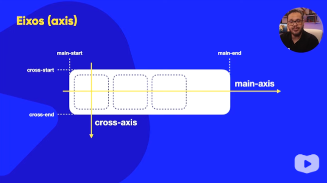

Para utilizar a propriedade do flex box é necessário criar uma div principal com a classe container e outras divs dentro dela com a classe item que vão ser os objetos que serão organizados no flex box.
Para a propriedade flex box funcioar é necessário adicionar a tag <display:flex>, na configuração de css da div principal, e adicionar <flex:auto> no css das divs de dentro
Para alterar a direção da organização dos objetos dentro do flex box é necessaário adicionar a tag <flex-direction>, pode ser configurda por row (horizontal), row-reverse, column (vertical) e column-reverse
main-axis é o eixo principal das flex box e cross axis é o eixo transversal, esses eixo tem dois pontos cada um, no main tem o main-start e o main-end, no cross tem o cross start e o cross end
Ao alterar a configuração de direção estes eixos também vao mudar

O empacotammento é definido pela tag <flex-wrap>, dentro do css do container, que por padrão vem como nowrap e vai diminuir o conteudo dentro do container até onde for possivel, mas também existem as configurações de wrap, que vai redimensionar o conteudo no sentido do eixo transversal e wrap-reverse, que vai redimensionar o conteudo no sentido contrário ao eixo transversal
Para simplificar é utilizado o flex-flow que junta as declarações flex-direction e flex-wrap
EX: flex-flow: row nowrap;
justify-content: flex-start; Alinha o conteudo começando do main start
justify-content: flex-end; Alinha o conteudo a partir do main-end
justify-content: center; Alinha o conteudo no centro
justify-content: space-between; Alinha o primeiro elemento no main-start e o ultimo no main-end, e o espaçamento entre os conteudos do meio será igual
justify-content: space-evenly; Coloca o mesmo espaçamento entre os itens
justify-content: space-around; Cria sessões dentro da flex box e alinha o conteudo dentro dessas seções
align-items: stretch; estica o conteudo para ocupar toda a altura possivel
align-tems: flex-start; Alinha o ocnteudo no começo do cross-axis
align-items: flex-end; Alinha o conteudo no final do cross-axis
align-items: center; Alinha o conteudo no centro do cross-axis
Para alinhar um conteudo só é preciso adicionar ao container pai justify-content: center; e align-items: center;
Todo elemento que estiver dentro do container tem por padrão "order: 0"
A tag <align-self> se aplica a cada item do container e interfere no cross-axis
flex-basis:auto - A largura dos itens é dada pelo seu conteúdo
flex-basis: 200px - Todos os itens vão ficar com o valor definido, independente do conteúdo dentro dele
O controle de tamanho dos itens é feito or flex-shrink e flex-grow
Por padrão flex-shrink: 1 e flex-grow: 0
A short hand flex tem as propriedades grow, shrink e basis respectivamente
flex: inicial = flex 0 1 auto
flex: none = flex: 0 0 auto = nada flexivel
flex: auto = flex: 1 1 auto = maximo de flexibilidade
O Grid é uma grade 6x6


Sempre numeradas da esquerda pra direita e de cima pra baixo

também podem conter números negativos

display:
grid-template-columns:
grid-template-rows:
gap:
align-items:
justify-items:
align-content:
justify-content:
*Somente em Grid Layout*
align= Alinhamento vertical
justify= Alinhamento horizonttal